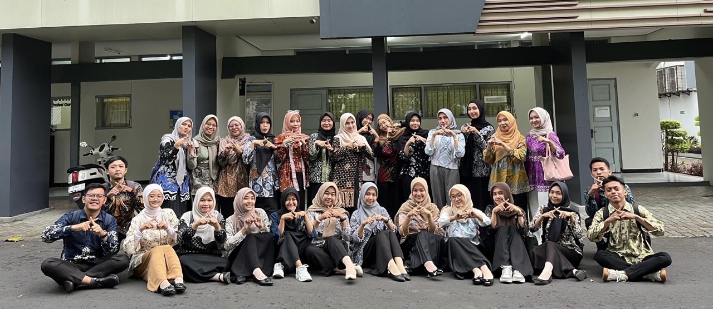

Selamat Datang di e-Portofolio
Seminar Pendidikan Profesi Guru
Mukti Muhtadi
NIM: 2501640500
Mahasiswa PPG Calon Guru Universitas Muhammadiyah Purwokerto
Website ini mendokumentasikan refleksi pembelajaran, artefak perkuliahan, jurnal refleksi 4C, serta karya inovasi pembelajaran selama menempuh Program Pendidikan Profesi Guru.
Program Pendidikan Profesi Guru (PPG)
Program Pendidikan Profesi Guru (PPG) dari Kementerian Pendidikan Dasar dan Menengah (Kemendikdasmen) merupakan program pendidikan yang diselenggarakan untuk mempersiapkan lulusan S1 Kependidikan dan S1/DIV Nonkependidikan yang memiliki bakat dan minat menjadi guru agar menguasai kompetensi guru secara utuh sesuai dengan standar nasional pendidikan.
PPG Universitas Muhammadiyah Purwokerto (UMP) berkomitmen mencetak pendidik profesional yang unggul, berkarakter, bermartabat, serta berlandaskan nilai-nilai Al-Islam dan Kemuhammadiyahan untuk menjawab tantangan pendidikan abad ke-21.

Lokasi & Kontak PPG UMP
Jl. KH. Ahmad Dahlan, PO BOX 202, Kembaran, Banyumas, Jawa Tengah 53181.
Hubungi Saya
Jika Anda memiliki pertanyaan, diskusi kolaboratif seputar inovasi pembelajaran, atau masukan mengenai e-portofolio ini, silakan hubungi melalui saluran di bawah ini: